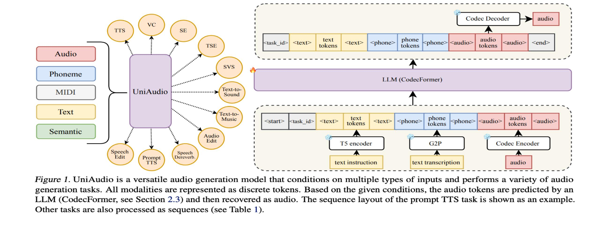

LLM-Codec / UniAudio 1.5
What if audio could use a text model's existing vocabulary? LLM-Codec constrains its codebooks to pretrained LLM embeddings and explores few-shot audio tasks through a frozen language model.
PHD RESEARCH / A CONNECTED SET OF QUESTIONS
Can one model understand and generate speech, music, and sound—and adapt to new tasks through examples?
My PhD explores this question through three connected directions: audio representations, scalable unified modeling, and high-fidelity waveform generation. Together, they form a path from specialized audio systems toward a shared modeling framework.
01 / REPRESENT
A codec can reconstruct audio well while producing tokens that are difficult for a language model to learn. For a unified audio model, the representation must also be compact, modelable, and connected to language.
What if audio could use a text model's existing vocabulary? LLM-Codec constrains its codebooks to pretrained LLM embeddings and explores few-shot audio tasks through a frozen language model.
Learnable queries aggregate context across audio frames, creating compact, semantic-rich representations. The goal is to make tokens useful for downstream modeling as well as reconstruction.
The public paper introduces ReasoningCodec: separate token streams serve text-aligned analysis and fine-grained waveform reconstruction. This gives understanding and generation distinct, complementary interfaces.
02 / UNIFY
Speech synthesis, voice conversion, sound generation, and music generation are often treated as separate problems. UniAudio explores a shared autoregressive objective across these tasks.
The Global–Local Transformer separates modeling across time from prediction within each audio frame. This helps manage multiple codec codebooks without flattening everything into one long sequence.

Adding understanding changes the problem. High-level interpretation and detailed acoustic generation need different capabilities. UniAudio 2.0 combines factorized audio tokens with functionally specialized Transformer layers and staged audio–text training.
Its training also uses related sequences of audio and text—auditory sentences—to learn dependencies across segments and support adaptation to new task compositions.
03 / GENERATE
Reducing the audio token rate makes generation more manageable for a language model. It also makes the final waveform reconstruction more demanding.
SimpleSpeech introduces scalar-quantized representations and Transformer diffusion for non-autoregressive speech synthesis. SimpleSpeech 2 develops this direction with flow matching and a simpler training pipeline, without requiring phoneme-level duration alignment.
My thesis studies how this scalar-latent approach can serve as a waveform reconstruction component downstream of compact audio tokens. This connects the original speech-synthesis work to the broader audio foundation model pipeline.
04 / CONNECT
Representation affects sequence length and predictability. Modeling determines what information the tokens need to preserve. Decoding determines how faithfully predicted tokens become sound. These choices cannot be optimized in isolation.
For understanding, the model reads audio and produces text. For generation, it predicts audio tokens that a waveform decoder turns into sound. UniAudio 2.0 provides a concrete system in which these capabilities meet.
The current work leaves important questions open: scaling beyond the explored model sizes, balancing speech with music and sound data, and reducing end-to-end latency. These are opportunities to deepen the framework rather than simply add more tasks.
05 / A WIDER TRAJECTORY
My research also includes work outside the thesis: early sound perception, language-controlled generation, open codec tools, and music systems. The milestones below use first public release years to show that broader trajectory.
Few-shot sound event detection and reference-conditioned target sound detection.
Exploring text-to-sound generation with discrete diffusion.
InstructTTS (January 2023) explores speaking-style control through natural-language descriptions. The year also includes HiFi-Codec / AcademiCodec, Make-An-Audio, and the first UniAudio release.
UniAudio 1.5, SimpleSpeech, and SimpleSpeech 2.
ALMTokenizer, alongside work on long-form speech and unified speech modeling.
UniAudio 2.0 and HeartMuLa: complementary directions in task generality and music generation.
HeartMuLa applies ALMTokenizer’s query-based compression, UniAudio’s Global–Local modeling, and SimpleSpeech’s SQ latent space in a music generation system. See the research-to-application case and listen to a generated song ↗.